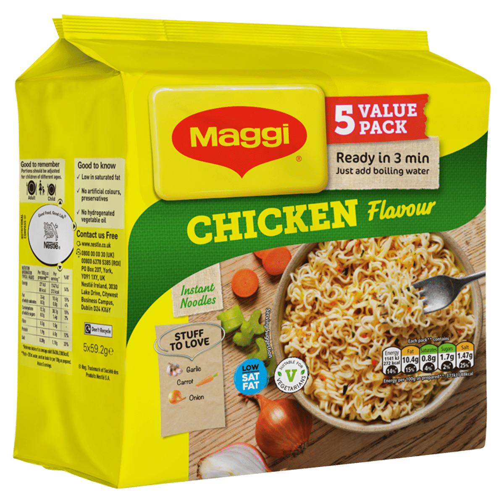

Maggi 2-Minute Noodles
Nestlé India Limited
Haryana
E
INGREDIENTS
- Wheat Flour (Maida)
- Edible Vegetable Oil (Palm / Palmolein)
- Salt
- Sugar
- Spices and Condiments
- Dehydrated Vegetables (Onion, Garlic, etc.)
- Hydrolysed Peanut Protein
- Flavour Enhancers
- Monosodium Glutamate (INS 621)
- Disodium Guanylate (INS 627)
- Disodium Inosinate (INS 631)
- Thickeners / Stabilizers
- Acidity Regulator (Citric Acid – INS 330)
- Antioxidant (TBHQ – INS 319)
Safe
- Wheat Flour (Maida) – Primary carbohydrate source
- Edible Vegetable Oil – Used in small quantity for noodle processing
- Spices (basic) – Chilli, coriander, cumin (small amounts)
Mild
- Salt – High sodium; should be limited
- Sugar – Added in small quantity
- Thickeners / Stabilizers – Texture and consistency agents
- Dehydrated Vegetables – Minimal nutritional contribution
Unsafe
-
Flavour Enhancers
- MSG (INS 621)
- Disodium Guanylate (INS 627)
- Disodium Inosinate (INS 631)
- Encourages overconsumption
- Refined Flour (Maida – overall) – Low fibre, low satiety
- High Sodium Seasoning Mix – Linked to blood pressure risk
- Ultra-Processed Nature – Poor daily nutrition profile
Alternative
- Homemade Vegetable Noodles – Controlled salt and oil
- Whole Wheat / Millet Noodles – Higher fibre
- Poha / Upma – Traditional, more filling
- Vegetable Soup – Light and nutritious
- Egg + Roti – Better protein balance